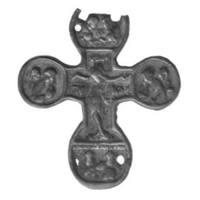

Catalog › CE-0407 · VSM2014-10
Valvă de encolpion din aramă, cat. 10, Muzeul Vladimir–Suzdal
turnare după model din sec. XV–XVI (1401–1600) · loc necunoscut · Muzeul-rezervație de stat Vladimir–Suzdal (Владимиро-Суздальский музей-заповедник), fondul „Metal” (Металл), inv. В-2939/2
single valve of a reliquary cross, aramă; turnare după model din c. XV–XVI (1401–1600); find spot unknown; kept at Muzeul-rezervație de stat Vladimir–Suzdal (Владимиро-Суздальский музей-заповедник), fondul „Metal” (Металл).


Identificare
- Categorie
- Valvă izolată
- Material
- Aramă
- Tehnică
- Turnare în relief
- Stare
- Fragmentară
- Dimensiuni
- Î 70 × L 65 × Gr 3 mm
Iconografie
- Avers
- Sf. Ioan
- Descriere avers
- Valva din față (?) a unei cruci cu brațul de jos alungit, cu terminații rotunjite și unghiuri drepte în centru. În centru, Răstignirea pe Golgota. În medalioanele de la capetele brațelor laterale, busturi perechi ale Maicii Domnului și ale uneia dintre mironosițe, ale lui Ioan Evanghelistul și ale sutașului Longin (?), spre Hristos. Sus, busturi ale doi arhangheli plecați unul spre altul; jos, busturi din față ale doi sfinți.
- Inscripții
- МРV; IWА
- Limba
- Slavonă
Datare și atribuire
- Datare
- turnare după model din sec. XV–XVI (1401–1600)
- Centru
- Necunoscut
- Tipologie
- cruce cu brațul de jos alungit, cu terminații rotunjite și unghiuri drepte în centru
Descoperire
- Context
- Colecție (fără context)
- Coordonate
- 56.1290° N, 40.4070° E
- Precizia locului
- Loc de păstrare (loc de descoperire incert)
Păstrare și referințe
- Colecție
- Muzeul-rezervație de stat Vladimir–Suzdal (Владимиро-Суздальский музей-заповедник), fondul „Metal” (Металл)
- Nr. inventar
- В-2939/2
- Bibliografie
- Н. А. Кокорина (сост.), Литые нагрудные кресты с древнерусской иконографией из фондовой коллекции «Металл» Государственного Владимиро-Суздальского музея-заповедника : Каталог, Vladimir, 2014, 43 p. [Kokorina 2014], cat. nr. 10, cu fotografia reprodusă la același număr. Text și imagini pe azbyka.ru: https://www.azbyka.ru/otechnik/ikona/litye-nagrudnye-kresty-s-drevnerusskoj-ikonografiej-iz-fondovoj-kollektsii-metall-gosudarstvennogo-vladimiro-suzdalskogo-muzeja-zapovednika/ (accesat 17.10.2026)
- Figura
- Kokorina 2014, fotografia de la cat. 10
- Planșe
- Kokorina 2014, catalogul crucilor-encolpion, nr. 10 (pagina tipărită nu e dată în ediția online)
- Observații
- Fragment (?): lipsesc valva din spate (?) și oglavia; capătul de sus e rupt; pe fundalul brațului de jos, o gaură mică de formă neregulată (turnare incompletă?). Imagini și inscripții în relief, foarte șterse; sub brațele lui Hristos „МРV” „IWА”. Fața interioară fără rezervor, aspră, cu găuri rotunde străbătute sus și jos și o mică proeminență-țăruș (?) jos. Origine necunoscută. Aceeași iconografie ca la cat. 9; după Kokorina, forma se datează sec. XV–XVI, dar fixarea cu țăruși și lipsa rezervorului îndoiesc vechimea turnării. Locul descoperirii nu e cunoscut cu precizie; punctul de pe hartă marchează locul de păstrare (Muzeul-rezervație de stat Vladimir–Suzdal), nu locul descoperirii. Coordonate: nu sunt date în sursă.
Citare: Corpus Encolpiorum, CE-0407, Valvă de encolpion din aramă, cat. 10, Muzeul Vladimir–Suzdal, --root/piese/VSM2014-10/ (accesat 2026-10-17).